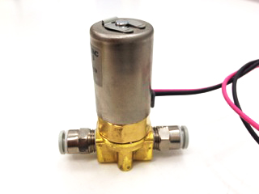
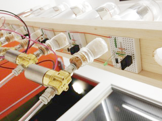

Viewers are not usually aware that the web browser undergoes various processes when they open a single web page. For example, there may be many transmissions if the website uses as many external resources, or the website may be specified to store cookies. Depending on the website's structure, there may also be processes not specified by the website, such as the garbage collection or re-rendering. Although we usually visualize these processes to understand the structure of a website, this project approaches from senses other than sight.
The weburette brews a cocktail by mixing drops of different liquors where each liquor represents a specific process of the browser. Because the processes of each web page differently, each cocktail will be brewed differently as well, and have its own original taste and aroma. Therefore we can sense not only the visual representations of the web page, but also the taste and aroma. This kind of shift in cognition may open doors to discover new values of a web page.
As mentioned above, the browser undergoes a variety of processes when opening a website. Firefox has a service that enables to observe the events that initiate these processes, called Observer Notifications. The weburette categorizes these events, for example into transmission-related or cookie-related, and sends a signal to a pin of Arduino that represents each category.
Tubes come out from bottles of liquor, leading to a solenoid valve. The solenoid valve is signaled by the Arduino to open or close. When the valve is open, a drop of liqour will flow into a glass located on the end of the tube.

solenoid valve

view from below the weburette